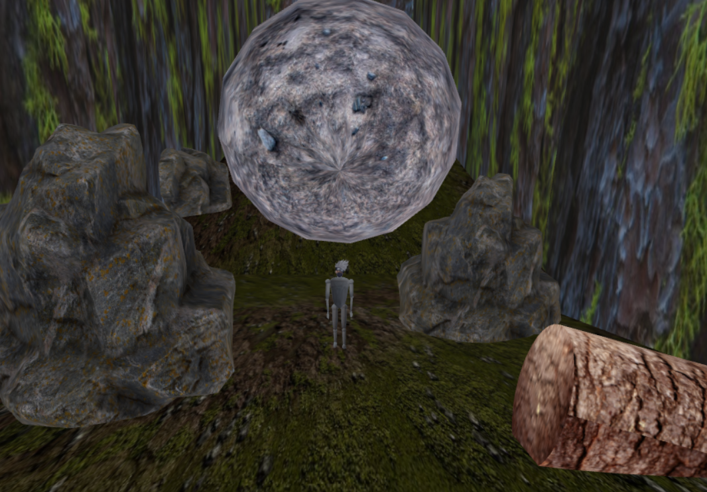
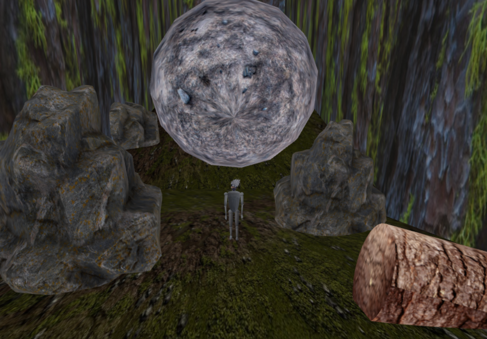

Javascript Game with Hierarchical Structures
Link to the Github Project: WebGL game
The game was developed using the Interactive Graphics course: Graphic libraries (Three.js) and Algorithms, Animation Theory and Hierarchical Models.
 Link to the Github Project: WebGL game
The game was developed using the Interactive Graphics course: Graphic libraries (Three.js) and Algorithms, Animation Theory and Hierarchical Models.
